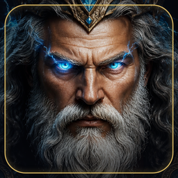

Mythos Absorber← Back to the game page← Към страницата на играта
Mythos Absorber retells the Greek myths as one story: a band of mortals climbs Olympus, beats the gods one by one and takes their power. This page holds the saga as it is written in the game.Mythos Absorber преразказва гръцките митове като една история: шепа смъртни изкачват Олимп, побеждават боговете един по един и вземат силата им. Тук е сагата така, както е написана в играта.
Thirteen chapters of ten levels each, from Nemea to the summit. Every level is ten waves on a chessboard.Тринадесет глави по десет нива, от Немея до върха. Всяко ниво е десет вълни върху шахматна дъска.
A defeated god joins your team and its signature spell becomes yours.Победеният бог влиза в отбора ти, а неговата магия става твоя.
A defeat costs a life. At zero the run starts again from level 1; your town, your gear and your records stay.Поражението струва живот. При нула серията започва отново от ниво 1; градът, екипировката и рекордите ти остават.
Before names, before light, before even darkness had a word for itself, there was only Nothingness.
Not a void waiting to be filled. Not a silence waiting for a voice. Nothingness was an absence so complete that the very idea of “to be” shattered inside it like a wave on stone. It had no end, because an end implies a beginning. It had no heart, because a heart beats in time. And yet — somewhere in its endless stillness — Nothingness died.
No one knows how that which never lived can die. The songs of the titans say Nothingness grew weary of its own fullness. Orphic scrolls whisper that even absence longs for a witness. Whatever it was, Nothingness collapsed into itself and left a grave — the first form in the world, carved from lack.
From that grave Chaos was born.
Not as gods bear children, nor as titans bear storms. Chaos rose from the grave of Nothingness like breath from an opened sarcophagus: without face, without gender, without mercy — only possibility. It was the first “yes” after the eternal “no.” And because it was born from a grave, in every work of its hands there remained a shadow of an ending.
Chaos created everything else.
First — the cosmos: the order that stretched space like a drumskin. Then — the universe: stars as wounds in the dark, the roads between them, the weight that keeps worlds from scattering back into the grave. From its breast came the primordials — Gaia with her heavy flesh, Tartarus with his bottomless gulp, Eros with the hunger that makes things seek each other, Nyx with her veil older than day. From them — the titans: Cronus with the sickle, Rhea with the womb, Oceanus with the belt around the world, Mnemosyne with the memory that forgets nothing, even what should be forgotten. And from the titans, by blood and deceit — the gods of Olympus.
Zeus cast Cronus down but did not kill him — for time cannot be killed. He sliced him into moments and scattered them through Tartarus, and over them built Olympus like a lid upon a well. For a thousand years the gods drank nectar and forgot that something ticked beneath their feet. They forgot something else as well: Chaos had not vanished. It had withdrawn into the cracks between its creations — into the pause between two heartbeats, into the instant before an oath, into the hunger that remains after the feast.
Then Olympus began to crack. Not from earthquake, but from hunger.
The gods, who until then had lived on the prayers of mortals, found sweeter food — the mortals themselves. Ares began to drink the courage of soldiers before they fell. Poseidon swallowed whole harbours in a single wave. Hades shut his gates and refused to return even those Orpheus might have sung back. The gods grew heavy, and the world — light and empty.
No one on Olympus asked where this hunger came from. Only one knew — and kept silent. Chaos whispered in every drop of ambrosia: eat more, so you do not return to the grave. It wanted the gods to empty the world until only the lid remained — and under it Cronus, and under Cronus — the road back to Nothingness. Chaos did not hate its creations. It simply longed for the grave from which it had crawled — and was ready to gather everything back.
In that emptiness was born something neither the gods nor Chaos expected: a gift older than Olympus, younger than Nothingness. Some mortals — not kings, not priests, but shepherds, mercenaries, thieves, widows — discovered that when they struck down a divine being, a part of it stayed in them. Not loot, but identity: the roar of the beast, the patience of the titan, the light of the god. The old songs named them the Absorbers. The gods named it theft. Chaos named it — if it has a word at all — a flaw in the plan.
Thirteen such souls gathered in the ruins of Nemea. But before they climbed the stair, they did something no mortal had done since the age of Prometheus.
Преди имената, преди светлината, преди дори тъмнината да има дума за себе си, имаше само Нищото.
Не празнота, която чака да бъде запълнена. Не тишина, която чака глас. Нищото беше отсъствие толкова пълно, че самото понятие „да бъде“ се чупеше в него като вълна в скала. То нямаше край, защото краят предполага начало. То нямаше сърце, защото сърцето бие във време. И все пак — някъде в безкрайната му неподвижност — Нищото умря.
Никой не знае как умира онова, което никога не е живяло. Песните на титаните казват, че Нищото се уморило от собствената си пълнота. Орфическите свитъци шепнат, че дори отсъствието копнее за свидетел. Каквото и да е било, Нищото се срина в себе си и остави гроб — първата форма в света, издълбана от липса.
От този гроб се роди Хаос.
Не както боговете раждат деца и не както титаните раждат бури. Хаос излезе от гроба на Нищото като дъх от отворен саркофаг: без лице, без пол, без милост — само възможност. Той беше първото „да“ след вечното „не“. И тъй като беше роден от гроб, във всяка негова творба имаше сянка на край.
Хаос създаде всичко друго.
Първо — космоса: редът, който разпъна пространството като опъната кожа на барабан. После — вселената: звездите като рани в тъмното, пътищата между тях, тежестта, която държи световете да не се разпилеят обратно в гроба. От гърдите му излязоха изначалните — Гея с тежката си плът, Тартар с бездънната си глътка, Ерос с глада, който кара нещата да се търсят, Никта с покривалото си, по-старо от деня. От тях — титаните: Кронос със сърпа, Рея с утробата, Океан с пояса около света, Мнемозина с паметта, която не забравя дори това, което трябва. А от титаните, с кръв и измама — боговете на Олимп.
Зевс свали Кронос, но не го уби — защото времето не може да бъде убито. Наряза го на мигове и ги разпиля по Тартар, а над тях построи Олимп като капак над кладенец. Хиляда години боговете пиха нектар и забравиха, че под краката им нещо тиктака. Забравиха и друго: че Хаос не беше изчезнал. Той се беше отдръпнал в пукнатините между създанията си — в паузата между две удара на сърцето, в мига преди клетвата, в глада, който остава след пира.
После Олимп започна да се пропуква. Не от земетресение, а от глад.
Боговете, които дотогава живееха от молитвите на смъртните, откриха по-сладка храна — самите смъртни. Арес започна да пие храбростта на войниците, преди да паднат. Посейдон глътваше цели пристанища в една вълна. Хадес затвори портите си и отказа да връща дори онези, които Орфей би изпял обратно. Боговете станаха тежки, а светът — лек и празен.
Никой на Олимп не попита откъде идва този глад. Само един го знаеше — и мълчеше. Хаос шепнеше във всяка амброзия: яж повече, за да не се върнеш към гроба. Той искаше боговете да изпразнят света, докато не остане само капакът — и под него Кронос, и под Кронос — пътят обратно към Нищото. Хаос не мразеше творенията си. Той просто копнееше за гроба, от който беше излязъл — и беше готов да прибере всичко обратно.
В тази празнота се роди нещо, което нито боговете, нито Хаос очакваха: дар, по-стар от Олимп, по-млад от Нищото. Някои смъртни — не царе, не жреци, а пастири, наемници, крадци, вдовици — откриха, че когато поразят божествено същество, част от него остава в тях. Не плячка, а самоличност: ревът на звяра, търпението на титана, светлината на бога. Старите песни ги нарекли Поглъщащите. Боговете ги нарекли кражба. Хаос ги нарече — ако изобщо има дума за това — грешка в плана.
Тринадесет такива души се събраха в руините на Немея. Но преди да тръгнат към стълбата, те направиха нещо, което никой смъртен не беше правил от века на Прометей.
---
The night was moonless. The dead fire of the ruined sanctuary smoked like a wound. The Oracle stood in the centre — not on a tripod, but on a broken stone — and spoke what she had seen at Dodona, when the oak leaves whispered not the will of Zeus, but something older:
“We do not fight Olympus alone. Behind the hunger of the gods stands Chaos. If we bring Zeus down and leave the lid open, Cronus will pour out — and Chaos will follow, to gather the world back into the grave of Nothingness. If we do not bring Zeus down — he will eat everything until only he remains, and again we reach the same grave. Two roads, one end — unless we strike both.”
The Lion rose first. “Then we fight gods and that which made them. Good. I go in first.”
The Mage looked at the sky, where there was not yet a storm. “The bolts belong to Zeus. But the sparks I stole are older. I will return them to whoever must receive them.”
The Archer nodded once. “My bow does not ask whom the arrow kisses.”
Hundala laid a hand on his heart. “Healing is rebellion. This rebellion is larger.”
The Monk closed his eyes. “Strength is in the moment before the blow. Let that moment be an oath.”
The Valkyrie drove her axe into the earth. “In Asgard they sing of Ragnarök. Here we will make it.”
The Assassin lit a candle — small, for thirteen names not yet dead. “The tool serves the oath. Not the god.”
The Necromancer whispered a name only he knew. “The dead will walk with us — against those who hold them, and against that which wants to erase them.”
The Guardian raised his shield. “I swear before Horkos: I will guard you — and the world behind you — from gods and from Chaos.”
Biks spread wings of ash. “I will come every evening. Even if there is no sunrise after.”
Tide touched the sand he had brought from the shore. “The sea remembers Nothingness. I choose the land — and you.”
Hurler came last. He had climbed the sea road with a slave's chain still on his wrist — twelve iron links, Hephaestus's own work — and he stopped outside the firelight, as slaves do. Twelve palms had already found each other, yet the circle would not close: beside the Oracle there was a gap the width of one man.
“I saw this at Dodona,” said the Oracle. “A circle of thirteen, and a forge-fire at its centre. I will speak what I saw. You will speak what we must do.”
Hurler gripped a stone. “I have forged for gods. Now I throw for mortals.” He stepped into the gap, took the hands of the Oracle and the Mage, and the circle closed. Thirteen palms.
The Oracle spoke the first half — the half that is seen:
“We swear to cast down Olympus. We swear to hold Chaos. We swear not to absorb Zeus alone, but together.”
Hurler spoke the second half — the half that is done — and on its last words thirteen throats became one voice:
“And if the lid cracks, we hold it with our own bones. If one falls, twelve carry the weight — and the fallen is lifted. If all fall — let the world remember that we tried.”
The fire flared of its own accord. In the flame for a moment appeared not a stair to Olympus, but two shadows: one with a thunderbolt and one without a face. Then the vision died.
“A stair of one hundred and thirty steps,” said the Oracle. “Thirteen chapters. Thirteen lands. Thirteen gods. And behind the last — that which none of us has seen, but all of us will meet.”
So the march began. Not as a hunt for plunder. As a war on two fronts — one visible, the other hidden in the cracks of the world.
Hurler walked at the rear, still chained. “Each of your roads will break a link,” the Oracle told him. “When the twelfth breaks, you will walk at the front.” He did not believe her. He carried the wounded anyway.
Нощта беше без месечина. Изгасналият огън на разрушеното светилище пушеше като рана. Оракулът застана в средата — не на триножник, а на счупен камък — и каза онова, което беше видяла в Додона, когато листата на дъба прошепнаха не волята на Зевс, а нещо по-старо:
„Ние не се бием само с Олимп. Зад глада на боговете стои Хаос. Ако свалим Зевс и оставим капака отворен, Кронос ще се излее — и Хаос ще го последва, за да прибере света обратно в гроба на Нищото. Ако не свалим Зевс — той ще изяде всичко, докато не остане само той, и пак ще стигнем до същия гроб. Два пътя, един край — освен ако не ударим и двамата.“
Лъвът първи стана. „Тогава се бием с богове и с онова, което ги е създало. Добре. Аз влизам пръв.“
Магът погледна към небето, където още нямаше буря. „Мълниите са на Зевс. Но искрите, които откраднах, са по-стари. Ще ги върна на когото трябва.“
Стрелецът кимна веднъж. „Лъкът ми не пита кого целува стрелата.“
Хъндала сложи ръка на сърцето си. „Лечението е бунт. Този бунт е по-голям.“
Монахът затвори очи. „Силата е в мига преди удара. Нека този миг бъде клетва.“
Валкираята удари брадвата в земята. „В Асгард пеят за Рагнарьок. Тук ще го направим ние.“
Асасинът запали свещ — малка, за тринадесет имена, които още не бяха мъртви. „Инструментът служи на клетвата. Не на бога.“
Некромантът прошепна име, което само той знаеше. „Мъртвите ще вървят с нас — срещу онези, които ги държат, и срещу онова, което иска да ги изтрие.“
Пазителят вдигна щита. „Кълна се пред Хоркос: ще пазя вас — и света зад вас — от богове и от Хаос.“
Бикс разпери крила от пепел. „Всяка вечер ще идвам. Дори ако няма изгрев след това.“
Приливът докосна пясъка, който беше донесъл от брега. „Морето помни Нищото. Аз избирам сушата — и вас.“
Хърлечанина дойде последен. Беше изкачил пътя от морето с робска верига още на китката — дванадесет железни халки, работа на самия Хефест — и спря извън светлината на огъня, както спират робите. Дванадесет длани вече се бяха намерили, а кръгът не се затваряше: до Оракула зееше празнина, широка колкото един човек.
„Видях това в Додона“, рече Оракулът. „Кръг от тринадесет, а в средата му — огън от ковачница. Аз ще изрека видяното. Ти ще изречеш онова, което трябва да сторим.“
Хърлечанина хвана камък. „Ковал съм за богове. Сега хвърлям за смъртни.“ Пристъпи в празнината, хвана ръцете на Оракула и на Мага — и кръгът се затвори. Тринадесет длани.
Оракулът изрече първата половина — онази, която се вижда:
„Кълнем се да свалим Олимп. Кълнем се да удържим Хаос. Кълнем се да не погълнем Зевс поотделно, а заедно.“
Хърлечанина изрече втората половина — онази, която се върши — и на последните ѝ думи тринадесет гърла станаха един глас:
„И ако капакът се пропука, ще го държим със собствените си кости. Ако един падне, дванадесетте носят тежестта — и падналият бива вдигнат. Ако всички паднем — светът да помни, че сме опитали.“
Огънят пламна от само себе си. В пламъка за миг се видя не стълба към Олимп, а две сенки: една с мълния и една без лице. После видението угасна.
„Стълба от сто и тридесет стъпала“, рече Оракулът. „Тринадесет глави. Тринадесет земи. Тринадесет богове. И зад последния — онова, което никой от нас не е виждал, но всички ще срещнем.“
Така започна походът. Не като лов на плячка. Като война на две фронта — единият видим, другият скрит в пукнатините на света.
Хърлечанина вървеше най-отзад, още окован. „Всеки ваш път ще скъса по една халка“, каза му Оракулът. „Когато се скъса дванадесетата, ще вървиш най-отпред.“ Той не ѝ повярва. Но носеше ранените.
---
Nemea is the first lesson: the lion whose hide no bronze or iron can pierce. The Lion leads, because this is his trail — and because the oath required someone to enter before the others.
Beyond the hills Ares gathers hoplites and satyrs. The god of war wants to see whether these mortals know how to die beautifully. But in his tent, where no mortal enters, lies a letter with a seal without an emblem — only an empty place, like a grave. “Feed yourself,” it reads. “Hunger is a truer ally than your brother Zeus.” Ares laughed and burned the letter. He did not ask who sent it. Hunger already spoke for the sender.
Cronus, scattered into moments, appeared to them as an old man with a scythe beside a dry stream. “Easy road,” he wished them. “And beware whom you listen to when something whispers that you should eat more.” No one believed him — and yet the Monk kept his words.
Немея е първият урок: лъвът, чиято кожа не пробива нито бронз, нито желязо. Лъвът поема пръв, защото това е неговата следа — и защото клетвата изискваше някой да влезе преди другите.
Зад хълмовете Арес събираше хоплити и сатири. Богът на войната искаше да види дали тези смъртни умеят да умират красиво. Но в шатрата му, където никой смъртен не влиза, лежеше писмо с печат без емблема — само празно място, като гроб. „Нахрани се“, пишеше там. „Гладът е по-верен съюзник от брат ти Зевс.“ Арес се засмя и изгори писмото. Не попита кой го е пратил. Гладът вече говореше вместо подателя.
Кронос, разпилян на мигове, им се яви като старец с коса край изсъхнал поток. „Лек път“, пожела им той. „И внимавайте кого слушате, когато ви шепне да ядете повече.“ Никой не му повярва — и все пак Монахът запази думите му.
The sea is not a place but a mood of Poseidon. Tritons, nereids and Scylla’s hounds guard the road to Oceanus — the titan who girdles the world like a belt and remembers the time when Chaos still walked openly among the waves.
Tide was at home here — and that is exactly why he feared most. The waves remembered his name and called him back. Poseidon sent him a messenger: a promise of immortality if he left the company. But the messenger also carried a second message, hidden in a shell — for Poseidon himself from an “ally without a name”: Swallow the harbours. The emptier the world, the closer we are to home.
Poseidon, who had never been patient, did not see the trap. His hunger had become a strategy.
In the deeps Oceanus whispered to Tide something he later told only the Oracle: “The children of Chaos have fought each other from the beginning. Zeus hates Cronus. Hera hates the lovers. Ares hates peace. But all of them — without knowing — serve the one who wants the grave to open again.”
Морето не е място, а настроение на Посейдон. Тритони, нереиди и сцилини хрътки пазят пътя към Океан — титана, който обикаля света като пояс и помни времето, когато Хаос още ходеше открито между вълните.
Приливът беше у дома си тук — и точно затова се страхуваше най-много. Вълните помнеха името му и го викаха обратно. Посейдон му изпрати пратеник: обещание за безсмъртие, ако остави отряда. Но пратеникът носеше и второ послание, скрито в раковина — за самия Посейдон от „съюзник без име“: Глътни пристанищата. Колкото по-празен е светът, толкова по-близо сме до дома.
Посейдон, който никога не беше бил търпелив, не забеляза капана. Гладът му беше станал стратегия.
В дълбините Океан прошепна на Прилив нещо, което той после разказа само на Оракула: „Децата на Хаос се бият помежду си открай време. Зевс мрази Кронос. Хера мрази любовниците. Арес мрази мира. Но всички те — без да знаят — служат на онзи, който иска гробът да се отвори отново.“
Daedalus’ labyrinth still stands, though Minos has long been a judge in the Underworld. Inside, the Minotaur guards something more precious than gold: Ariadne’s thread — the only thing Athena cannot see, because it was spun by a mortal hand and by a refusal to serve the gods.
The Guardian leads the company — for Athena once blessed him, and now he must face her. But in the labyrinth more than a monster waited. The walls whispered dialogues: Athena and Hera, agreed in secret years before. “If Zeus falls,” Hera had said, “the throne is mine.” “If Zeus falls,” Athena had answered, “wisdom will choose an heir — not a wife.” The two had made a pact to neutralize each other while the mortals did the dirty work — and then to fight for the empty seat.
Chaos loved such pacts. They tore Olympus apart better than any thunderbolt.
Лабиринтът на Дедал още стои, макар Минос отдавна да е съдия в Подземието. Вътре Минотавърът пази нещо по-ценно от злато: нишката на Ариадна — единственото нещо, което Атина не може да види, защото е изпредена от смъртна ръка и от отказ да служи на боговете.
Пазителят води отряда — защото Атина някога го е благословила, и сега той трябва да я изправи пред лицето ѝ. Но в лабиринта ги чакаше не само чудовище. Стените шепнеха диалози: Атина и Хера, договорени в тайна преди години. „Ако Зевс падне“, беше казала Хера, „тронът е мой.“ „Ако Зевс падне“, беше отговорила Атина, „мъдростта ще избере наследник — не съпруга.“ Двете бяха сключили пакт да се неутрализират взаимно, докато смъртните свършат мръсната работа — и после да се бият помежду си за празния стол.
Хаос обичаше такива пактове. Те разкъсваха Олимп по-добре от всяка мълния.
The navel of the world, the Omphalos, pulses. The Python Apollo killed has returned — because Apollo stopped guarding prophecies and began to sell them. The gods of Olympus paid in souls; kings in gold; and one buyer paid in silence — a promise that when the world returns to the grave, Apollo will be the last voice to go out.
The Oracle returned to the temple where she was raised and heard her own voice speaking lies from the god’s mouth. Among the lies, however, was one truth Apollo could not hide, because it was older than his lyre: the lid will crack; the thirteen will fall; the chains will shine before the road opens again.
She did not tell the company. Not yet. Cassandra’s curse was in her — but worse was that this time they might believe her, and belief might break them before the Summit.
Пъпът на света, Омфалос, пулсира. Питонът, когото Аполон уби, се е върнал — защото Аполон спря да пази пророчествата и започна да ги продава. Боговете на Олимп плащаха с души; царете — със злато; а един купувач плащаше с тишина — с обещание, че когато светът се върне в гроба, Аполон ще бъде последният глас, който ще угасне.
Оракулът се върна в храма, където беше отгледана, и чу как собственият ѝ глас изрича лъжи от устата на бога. Между лъжите обаче имаше една истина, която Аполон не можеше да скрие, защото тя беше по-старя от лирата му: капакът ще се пропука; тринадесетте ще паднат; оковите ще блеснат, преди пътят да се отвори отново.
Тя не каза това на отряда. Не още. Касандриното проклятие беше в нея — но по-страшното беше, че този път можеше да ѝ повярват, и вярата да ги сломи преди Върха.
In Arcadia hunter and prey trade places every night. The Calydonian boar roots among trees older than Rhea. Artemis hunts the Absorbers like deer — and the Archer, once her priestess, must choose between her vow to the goddess and her vow to the company.
In the forest Rhea — mother of the gods, hidden in the roots — revealed a betrayal. Zeus had promised Artemis an eternal hunting park of all Hellas if she killed the Absorbers before Delphi. Artemis had accepted — then half-renounced, because the Archer was her child. “Half-treason,” Rhea said bitterly. “Chaos’s favourite food. My children eat their children. And behind them something older licks the plates.”
The Archer listened with bow in hand. The two aimed at each other all night.
В Аркадия ловецът и плячката си сменят местата всяка нощ. Калидонският глиган рие корени на дървета, по-стари от Рея. Артемида ловува Поглъщащите като елени — и Стрелецът, която някога е била нейна жрица, трябва да избере между клетвата към богинята и клетвата към отряда.
В гората Рея — майката на боговете, скрита в корените — им разкри предателство. Зевс беше обещал на Артемида вечен ловен парк от цяла Елада, ако тя убие Поглъщащите преди Делфи. Артемида беше приела — после се отказала наполовина, защото Стрелецът беше нейно дете. „Полу-измяна“, каза Рея горчиво. „Най-любимата храна на Хаос. Децата ми ядат децата си. А зад тях нещо по-старо ближе чиниите.“
Стрелецът слушаше с лък в ръка. Двете се целиха цяла нощ.
The marshes of Lerna grow two heads for every one cut. Demeter has stopped the harvest — fields rot, people starve, and the Hydra grazes in the grain. The Monk says that here you do not win by strength but by patience: you burn the neck before it grows.
But the hunger of the land was not only grief for Persephone. Hera had struck a secret pact with Hades: he would hold the daughter one more season to weaken Demeter’s cult and turn prayers toward Olympus. In return Hera promised Hades a voice in the council when Zeus was “…replaced.” Hades, the accountant, had accepted — then regretted it. Demeter, who felt the deceit in the roots of the wheat, was almost ready to burn the world just to make her sister and son-in-law pay.
Chaos did not write these pacts. It only kept the ink from drying.
Блатата на Лерна раждат по две глави за всяка отсечена. Деметра е спряла жътвата — нивите гният, хората гладуват, а Хидрата пасе в житата. Монахът казва, че тук не се побеждава със сила, а с търпение: изгаряш шията, преди да е пораснала.
Но гладът на земята не беше само от скръбта за Персефона. Хера беше сключила таен пакт с Хадес: той да задържи дъщерята още един сезон, за да отслаби култа към Деметра и да насочи молитвите към Олимп. В замяна Хера обещала на Хадес глас в съвета, когато Зевс „бъде… заместен“. Хадес, счетоводителят, беше приел — после съжалил. Деметра, която усещаше измамата в корените на житото, почти беше готова да изгори света, само и само да накара сестра си и зет си да платят.
Хаос не пишеше тези пактове. Той само оставяше мастилото да не изсъхва.
On the island where Aphrodite rose from the foam, war is fought with desire. Amazons, priestesses and erotes lure the company to stay — forever, in a sweet sleep. The Chimera guards the shore. The Assassin is the only one love cannot blind, because he long ago decided he has no right to it.
Aphrodite had made her own pact — not with Hera (they hated each other too beautifully), but with Dionysus: if the Absorbers reached the vineyards, wine and desire together would loosen them, make them a family too sweet to risk the war. “Love is softer chains than iron,” she had said. “Chaos promises an end. I promise an end that feels like a beginning.” Dionysus had laughed and accepted. Neither knew that the third witness to the pact was Chaos itself — in the crack between two cups.
На острова, където Афродита излезе от пяната, войната се води с желание. Амазонки, жрици и ероти примамват отряда да остане — завинаги, в сладък сън. Химерата пази брега. Асасинът е единственият, когото любовта не може да заслепи, защото отдавна е решил, че няма право на нея.
Афродита беше сключила свой пакт — не с Хера (те се мразеха твърде красиво), а с Дионис: ако Поглъщащите стигнат до лозята, виното и желанието заедно да ги разпуснат, да ги направят семейство твърде сладко, за да рискува войната. „Любовта е окови по-меки от желязото“, беше казала тя. „Хаос обещава край. Аз обещавам край, който се усеща като начало.“ Дионис се беше засмял и приел. Нито единият не знаеше, че третият свидетел на пакта беше самият Хаос — в пукнатината между две чаши.
Under Lemnos Hephaestus forges the gods’ weapons for the last war. Cyclopes, Cabeiri and golden maidens work day and night. Talos, the bronze giant, circles the island three times daily. Hurler knows these forges: he was a slave here before he learned that stone can fly.
Hephaestus was the only one who refused the secret pacts. Zeus had ordered him to forge thirteen shackles — “just in case,” said the king of the gods, “if the Absorbers come too far.” Hephaestus forged the shackles. Then he hid them in a furnace no one else opened, and sent Zeus ordinary chains. “I forged his thunderbolts,” he later told Hurler. “I forged Prometheus’s chains too. I lied to the king for the first time in my life — because in the fire I heard something that was not Zeus. Something that wanted the shackles ready for you. I do not forge for graves.”
That was the quietest betrayal on Olympus — and the costliest. Chaos noticed the absence. It began to seek another smith.
Под Лемнос Хефест кове оръжията на боговете за последната война. Циклопи, кабири и златни девойки работят денем и нощем. Таласът, бронзовият великан, обикаля острова три пъти дневно. Хърлечанина познава тези пещи: тук е бил роб, преди да научи, че камъкът може да лети.
Хефест беше единственият, който отказа тайните пактове. Зевс му беше заповядал да изкове тринадесет окови — „за всеки случай“, казал царят на боговете, „ако Поглъщащите стигнат твърде далеч“. Хефест изкова оковите. После ги скри в пещ, която никой друг не отваряше, и изпрати на Зевс обикновени вериги. „Аз изковах мълниите му“, каза после на Хърлечанина. „Изкових и веригите на Прометей. Лъгах царя за пръв път в живота си — защото във огъня чух нещо, което не беше Зевс. Нещо, което искаше оковите да са готови за вас. Аз не кова за гробове.“
Това беше най-тихата измяна на Олимп — и най-скъпата. Хаос забеляза липсата. Започна да търси друг ковач.
All the roads of Hellas pass through Hermes. Bandits like Sciron and Sinis wait at every bend, and hundred-eyed Argus watches the crossroads. Assassin and Biks take the night paths — Hermes was once patron of thieves, and now has become their hunter.
Hermes carried Zeus’s message: come, I await you, only an Absorber can inherit me. But he also carried a second message, hidden in his sandals — from Chaos, written without ink: the lid is the key; the heir is bait; the shackles are already ready elsewhere. Hermes, god of crossroads, was the only one who saw both inscriptions at once. That is why he fled three times — not from fear, but because he did not know which message to deliver first.
Biks caught him at sunset. “Speak.”
Всички пътища на Елада минават през Хермес. Разбойници като Скирон и Синис дебнат на всеки завой, а стоокият Аргос наблюдава кръстопътищата. Асасинът и Бикс поемат нощните пътеки — Хермес е бил покровител на крадците, а сега е станал техен ловец.
Хермес носеше вестта на Зевс: елате, аз ви чакам, само Поглъщащ може да ме наследи. Но носеше и втора вест, скрита в сандалите му — от Хаос, писана без мастило: капакът е ключ; наследникът е примамка; оковите вече са готови другаде. Хермес, богът на кръстопътищата, беше единственият, който виждаше и двата надписа наведнъж. Затова избяга три пъти — не от страх, а защото не знаеше коя вест да предаде първа.
Бикс го настигаше по залез. „Говори.“
Dionysus is the last-born god and the maddest. His maenads tear apart anyone who refuses the cup. Mnemosyne, titaness of memory, is imprisoned in a wineskin — without her both gods and mortals forget who they are. The company must stay sober in a land where sobriety is a crime.
Aphrodite and Dionysus’s pact activated here — the wine whispered stay, love each other, forget the stair. But Mnemosyne, even imprisoned, remembered Chaos. In the Necromancer’s dream she pierced the skin with one memory: an image of a grave before the world, and a voice: I created memory so that the return would hurt.
The Necromancer woke with blood on his lips. “We must free her. Not only for us. Because if we forget the oath at Nemea, we are ready for the shackles.”
Дионис е последният роден бог и най-лудият. Менадите му разкъсват всеки, който откаже чашата. Мнемозина, титанката на паметта, е затворена в мехур с вино — без нея и боговете, и смъртните забравят кои са. Отрядът трябва да остане трезв в земя, където трезвостта е престъпление.
Пактът на Афродита и Дионис се задейства тук — виното шепнеше останете, обичайте се, забравете стълбата. Но Мнемозина, дори затворена, помнеше Хаос. В съня на Некроманта тя проби мехура с един спомен: образ на гроб преди света, и глас: аз създадох паметта, за да боли връщането.
Некромантът се събуди с кръв на устните. „Трябва да я освободим. Не само заради нас. Защото ако забравим клетвата в Немея, сме готови за оковите.“
Hera guards the Hesperides’ garden and the throne of Olympus in her husband’s absence. Typhon, father of all monsters, is loosed from his chains — Hera prefers the world to burn rather than see it inherited by mortals. Ladon, the hundred-headed dragon, coils around the golden apples.
Here the pact between Hera and Athena finally broke. Athena had already fallen in Crete; Hera remained alone with her promise of the throne. She loosed Typhon not only from spite — in her ear whispered the familiar faceless voice: burn the garden; fire opens roads downward. Hera thought she was pouring revenge. In truth she was digging a grave.
Biks returned to the garden where he was born and cursed never to see sunrise. Ladon knew him. The dragon did not attack at once — one of its heads whispered: “Evening’s son… the master under the lid ticks… and the master beneath the master under the lid smiles.”
Хера пази Хесперидския сад и трона на Олимп в отсъствието на съпруга си. Тифон, бащата на всички чудовища, е пуснат от веригите си — Хера предпочита светът да изгори, отколкото да го види наследен от смъртни. Ладон, стоглавият дракон, се увива около златните ябълки.
Тук пактът между Хера и Атина се счупи окончателно. Атина вече беше паднала в Крит; Хера остана сама с обещанието си за трона. Тя пусна Тифон не само от злоба — в ухото ѝ шепнеше познатият безличен глас: изгори градината; огънят отваря пътища надолу. Хера си мислеше, че сипе отмъщение. Всъщност копаеше гроб.
Бикс се върна в сада, където беше роден и прокълнат никога да не види изгрев. Ладон го познаваше. Драконът не го нападна веднага — прошепна с една от главите си: „Вечерният син… господарят под капака тиктака… а господарят под господаря под капака се усмихва.“
Styx, Lethe, Acheron. Cerberus with three heads. Hades is not evil — he is the accountant of death, and in his books there is a debt: every absorbed god owes one soul. The Necromancer has come to pay the debt with the army of the dead he promised to free.
Hades admitted the pact with Hera. “I erred,” he said simply, like a man correcting a column. “I held Persephone longer than the seasons’ contract allowed. Hera promised a voice. The voice turned out empty — like those letters without a seal that Ares burned.” He raised his eyes to the vault of the Underworld. “Even here, under the earth, I feel something pulling downward. Not toward me. Through me. Toward something deeper than Tartarus.”
The Necromancer paid. Hundala held his hand. The souls Zeus had locked were released. Persephone went to her mother. And Hades, before giving the helm of invisibility to the Assassin, said: “Wear it. You will need it not against me — against what comes after Zeus. I am an accountant. It is… cancellation.”
Стикс, Лета, Ахерон. Кербер с трите глави. Хадес не е зъл — той е счетоводител на смъртта, и в книгите му има дълг: всеки погълнат бог дължи една душа. Некромантът е дошъл да плати дълга с армията от мъртви, които обеща да освободи.
Хадес призна пакта с Хера. „Сгреших“, каза той просто, като човек, който оправя графа. „Задържах Персефона по-дълго, отколкото позволяваше договорът със сезоните. Хера обещаваше глас. Гласът се оказа празен — като онези писма без печат, които Арес гореше.“ Той вдигна очи към свода на Подземието. „Дори тук, под земята, усещам как нещо дърпа надолу. Не към мен. През мен. Към нещо по-дълбоко от Тартар.“
Некромантът плати. Хъндала държа ръката му. Душите, които Зевс беше заключил, бяха пуснати. Персефона тръгна към майка си. А Хадес, преди да предаде шлема на невидимостта на Асасина, каза: „Носете го. Ще ви трябва не срещу мен — срещу онова, което идва след Зевс. Аз съм счетоводител. То е… анулиране.“
The last ten steps. Giants, Hecatoncheires with a hundred arms, Zeus’s eagles. Enceladus, whom Athena buried under Sicily, has risen. And above, at level one hundred and thirty, Zeus waits — with every thunderbolt the Cyclopes ever forged, and with the lid of the well beneath him.
He smiled when he saw them. “The boy with the jar,” he said to the Mage. “I kept your sparks so you would come.” To the Oracle: “You have seen the end. Tell them.” She was silent. Zeus laughed. “Good. Then they will see it.”
The battle split the sky. The Lion leapt first. The Valkyrie burned. Tide raised a tsunami against the bolts. Hurler threw boulders. The Guardian held the phalanx of his dead brothers. The Archer returned a lunar arrow into an eagle’s eye. The Assassin vanished and appeared at the king’s back. The Necromancer raised the Army of Hades. Biks fell like sunset. Hundala hauled sunrises through the smoke. The Monk was everywhere with a thousand palms. The Oracle unveiled a heavenly omen. The Mage returned the thunder downward, not up.
Zeus fell.
The lid cracked. From the well came Cronus — not as an old man, but as a river of moments. Then the thirteen did what they had sworn in Nemea: they did not absorb Zeus alone. They joined hands and took him together — each a thirteenth of the sky. The weight that would have crushed one was bearable for thirteen. The lid closed. Cronus was under stone again. Time trembled and caught.
For a moment — only a moment — the world believed it was free.
Последните десет стъпала. Гиганти, Хекатонхейри със сто ръце, орлите на Зевс. Енкелад, когото Атина затрупа под Сицилия, се е изправил. А горе, на ниво сто и тридесет, Зевс чака — с всички мълнии, които Циклопите някога са изковали, и с капака на кладенеца под себе си.
Той се усмихна, когато ги видя. „Момчето с гърнето“, рече на Мага. „Пазих ти искрите, за да дойдеш.“ На Оракула: „Виждала си края. Кажи им.“ Тя мълча. Зевс се засмя. „Добре. Тогава ще го видят.“
Битката разцепи небето. Лъвът скочи пръв. Валкираята горя. Приливът вдигна цунами срещу мълниите. Хърлечанина хвърляше канари. Пазителят държеше фалангата на мъртвите си братя. Стрелецът върна лунна стрела в окото на орел. Асасинът изчезваше и се появяваше в гърба на царя. Некромантът вдигна Армията на Хадес. Бикс падна като залез. Хъндала дърпаше изгреви през дима. Монахът беше навсякъде с хиляда длани. Оракулът разкри небесно знамение. Магът върна гърмотевицата надолу, не нагоре.
Зевс падна.
Капакът се пропука. От кладенеца излезе Кронос — не като старец, а като река от мигове. Тогава тринадесетте направиха онова, за което се бяха заклели в Немея: не поеха Зевс поотделно. Хванаха се за ръце и го поеха заедно — всеки по една тринадесета от небето. Тежестта, която би смазала един, беше поносима за тринадесет. Капакът се затвори. Кронос отново беше под камък. Времето трепна и се хвана.
За миг — само за миг — светът повярва, че е свободен.
Each chapter also has an ending, and the saga has an epilogue. Those are told in the game, after the chapter is won.Всяка глава има и край, а сагата има епилог. Те се разказват в играта, след като главата е спечелена.
Myth root: Heracles and the Nemean lion (the first labour)Митологичен корен: Херакъл и Немейският лъв (първият подвиг)
He is not Heracles. That is the first thing he tells anyone who asks — and the last thing anyone believes when they see him with the lion’s hide on his shoulders.
He was born in Cleonae, a village half a day’s walk from Nemea, in a year when the lion came down from the hills every full-moon night. His father was a shepherd. One night the beast came for the flock; the father went out with a staff — and did not return. The nine-year-old boy found only tracks: huge, deep, with claws that had split stone.
The songs say Heracles strangled the lion with bare hands because no blade pierced its hide. The songs do not say what happened after: the hide was taken with the lion’s own claw, but it never made peace. It returned. Every time they buried it, years later a new beast rose from the earth. The last rose on the night the boy from Cleonae turned twenty.
He waited for it. Not with a sword — swords do not help. He waited with the patience of a man who for eleven years had counted one beast’s steps. He leapt on its back, seized its throat, and they rolled down the slope until dawn. When the lion died, something in the young man’s chest roared. He did not take the hide off — it wound itself around him. That is how he learned he was an Absorber.
Since then two hearts live in him. The human wants peace, a field, a woman who waits. The lion wants only the next leap. All his battle skill is a bargain between the two. Lion Strike is the human hand guided by the beast. Roar is the lion stepping out for a moment to make enemies weaken with terror. Nemean Leap is that leap into the dark he made at twenty, which the earth still remembers — so it cracks under his feet. Claws are the three wounds his father never managed to deal. And Lion’s Wrath is the moment he stops negotiating and lets the beast all the way out.
In the company he is first into the fight and last to sit and eat. With the Valkyrie he shares a strange friendship — both know what it is to carry something that wants blood. Hurler also wears a lion’s mane and the two argue all evening whose beast is more real. With the Guardian they understand each other without words: one strikes, the other holds.
In Nemea he first felt the hunger behind Ares’ voice. On the Summit he roared until the beast in him went mute before Chaos. His shackles weigh like the staff his father never brought home. His oath stands: to fight until no shepherd must go out into the night — even if now the night is longer than the world.
Той не е Херакъл. Това е първото, което казва на всеки, който го попита — и последното, което някой му вярва, когато го види с лъвската кожа на раменете.
Роден е в Клеонай, селце на половин ден път от Немея, в година, когато лъвът слизал от хълмовете всяка пълнолунна нощ. Баща му бил овчар. Една нощ звярът дошъл за стадото, бащата излязъл с тояга — и не се върнал. Момчето на девет години намерило само следи: огромни, дълбоки, с нокти, които разцепили камъка.
Песните разказват, че Херакъл удушил лъва с голи ръце, защото никое острие не пробивало кожата му. Песните не разказват какво станало после: кожата била свалена с нокътя на самия лъв, но тя никога не се примирила. Тя се връщала. Всеки път, когато я заравяли, след години от земята излизал нов звяр. Последният излязъл в нощта, когато момчето от Клеонай навършило двадесет.
Той го чакал. Не с меч — мечовете не помагат. Чакал го с търпението на човек, който единадесет години е броил стъпките на един звяр. Скочил му в гръб, стиснал го за гърлото, и двамата се търкаляли по склона до зори. Когато лъвът умрял, нещо в гърдите на младия мъж изревало. Той не свалил кожата — тя сама се увила около него. Така разбрал, че е Поглъщащ.
Оттогава в него живеят две сърца. Човешкото иска мир, нива, жена, която го чака. Лъвското иска само следващия скок. Цялото му бойно умение е споразумение между двете. Лъвски удар е човешката ръка, водена от звяр. Рев е лъвът, който излиза за миг и кара враговете да отслабнат от ужас. Немейски скок е онзи скок в тъмното, който е направил на двадесет години, и който земята още помни — затова се пропуква под краката му. Нокти са трите рани, които баща му така и не успял да нанесе. А Гневът на Лъва е мигът, в който спира да преговаря и пуска звяра докрай.
В отряда той е първият, който влиза в боя, и последният, който сяда да яде. С Валкираята го свързва странно приятелство — двамата знаят какво е да носиш в себе си нещо, което иска кръв. Хърлечанина също носи лъвска грива и двамата цяла вечер спорят чий звяр е по-истински. С Пазителя се разбират без думи: единият удря, другият държи.
В Немея той пръв усети глада зад гласа на Арес. На Върха ревеше, докато звярът в него онемя пред Хаос. Оковите му тежат като тоягата, която баща му така и не върна вкъщи. Клетвата му стои: да се бие, докато вече никой овчар не трябва да излиза в нощта — дори ако сега нощта е по-дълга от света.
Myth root: The Cyclopes’ thunderbolts and Prometheus’s theft of fireМитологичен корен: Мълниите на Циклопите и Прометеевата кражба на огъня
The Mage was never anyone’s pupil. He was an apprentice in the Cyclopes’ forge under Etna — not a smith, but a boy who swept sparks. The Cyclopes forged Zeus’s bolts as a gift for their freedom from Tartarus, and every bolt, before it was sent to Olympus, left one spark on the floor. The boy gathered them in a clay jar. For years.
One day the jar burst. The sparks did not fall — they entered him. His body survived, but changed: his hair stood up, his fingers began to crackle, and his eyes glowed in the dark like a distant storm. The Cyclops Steropes looked at him with his one eye and said: “You have stolen from Zeus. He will find you.”
The Mage fled. He spent years in the mountains of Thessaly, teaching himself to master what he carried. He learned that lightning is not a weapon but a question: where is the shortest path between sky and earth? He learned to be that path.
So Lightning is his simplest spell — one answered question. Chain Lightning is a bolt that keeps asking: from foe to foe until the answers run out. Static Trap is the patience learned in the forge: a charge left on the floor like a spark waiting for a step. Haste is what lightning does to allies’ blood — makes hearts beat faster. And Zeus’s Thunder is the stolen spark itself, returned to the god it was taken from — but on the way down, not up.
The Mage is fragile. One arrow can kill him; one sword-blow too. He knows this and stays behind Guardian and Hundala like a child behind its elders. But in the company no one jokes about him: they have seen the sky open when he is angry.
With the Oracle he has an old feud that is really love: she sees the storm, he makes it. They argue who is closer to Zeus. On the Summit Zeus knew him. “The boy with the jar,” he said. “I kept your sparks so you would come.” The Mage never learned whether that was a lie. Then Chaos swallowed his last spark like a candle in a bottomless cave. In the shackles his fingers still crackle — faintly, like a distant storm behind bars.
Магът никога не е бил ученик на никого. Бил е чирак в ковачницата на Циклопите под Етна — не ковач, а момче, което мете искрите. Циклопите изковали мълниите на Зевс като дар за освобождението си от Тартар, и всяка мълния, преди да бъде изпратена на Олимп, оставяла по една искра на пода. Момчето ги събирало в глинено гърне. Години наред.
Един ден гърнето се пръснало. Искрите не паднали — влезли в него. Тялото му оцеляло, но се променило: косата му щръкнала, пръстите му започнали да пукат, а очите му светели в тъмното като далечна буря. Циклопът Стероп го погледнал с едното си око и казал: „Ти си откраднал от Зевс. Той ще те намери.“
Магът избягал. Прекарал години по планините на Тесалия, учейки се сам да управлява онова, което носи. Разбрал, че мълнията не е оръжие, а въпрос: къде е най-краткият път между небето и земята? Той се научил да бъде този път.
Затова Мълния е неговото най-просто заклинание — едно отговорено питане. Верижна светкавица е мълния, която продължава да пита. Статичен капан е търпението, научено в ковачницата. Ускорение кара сърцата на съюзниците да бият по-бързо. А Гръмът на Зевс е откраднатата искра, върната надолу, не нагоре.
Магът е крехък. Една стрела може да го убие. Той се държи зад Пазителя и Хъндала. С Оракула има стара вражда, която всъщност е обич: тя вижда бурята, той я прави. На Върха Зевс го позна: „Момчето с гърнето.“ После Хаос погълна последната му искра като свещ в бездънна пещера. В оковите пръстите му все още пукат — слабо, като далечна буря зад решетка.
Myth root: Artemis, Orion, and Hydra-blood arrowsМитологичен корен: Артемида, Орион и отровните стрели от кръвта на Хидрата
As a child the Archer was given to Artemis — so poor families in Arcadia did when they had no dowry for daughters. In the temple at Brauron girls wore yellow and danced as bears, and the best received a bow. She received one at seven. At twelve she never missed a bird in flight.
Artemis is goddess of two things that seem opposite: she protects small animals and she kills them. Her priestesses learn both. They learn that an arrow is mercy if exact, and cruelty if careless. Precise Shot is the first lesson: one arrow, one heart, no pain.
But the Archer also learned what the temple hides. Heracles dipped his arrows in the Hydra’s blood and from then every wound from them would not heal. One such arrow killed the centaur Chiron, wisest of teachers. Another — Heracles himself, through Deianira’s shirt. The priestesses kept the last drops of that poison in a lead jar under the altar. The Archer found it. Poison Arrow is her first theft and first sin.
Artemis cast her out when she learned. She did not kill her — the goddess of the hunt does not kill those she raised, but lets them run and then hunts them. The Archer has run since. She learned to shoot while fleeing, backward, upward, and to rain arrows like hail — Arrow Rain. She learned to send one arrow through a whole line of foes, as Orion once pierced three deer at once — Piercing Shot.
In the Arcadian forests, in Chapter Five, Artemis finally caught her. The two aimed at each other all night without shooting. At dawn the goddess loosed — and the Archer caught the arrow in the air and returned it. That arrow, lunar and silver, is now her ultimate: Bow of Artemis, a rain that covers the whole field and leaves the earth poisoned.
In the company she is the quiet one. She speaks rarely, watches everything. The Lion teases her because he is loud; the Assassin understands her, because both kill at distance without looking in the eyes. With the Monk she drinks herbal tea and argues whether poison is medicine. She has never forgiven herself for weeping for the goddess who cast her out. On the Summit her arrow returned tip-less from Chaos’s emptiness. Chained, she still counts the winds — and waits for the next world, where there may be a target emptiness cannot eat.
Като дете Стрелецът била дадена на Артемида — така правели бедните семейства в Аркадия. В храма на Бравроне получила лък на седем. На дванадесет не пропускала птица в полет.
Артемида е богиня на две неща: пази малките животни и ги убива. Прецизна стрела е първият урок: една стрела, едно сърце, без болка. Стрелецът открила под олтара отровата от Хидрата — Отровна стрела, първата ѝ кражба. Артемида я прогонила и я ловувала. Научила се на Дъжд от стрели и Пронизваща стрела. В Аркадия върнала лунната стрела на богинята — сега Лъкът на Артемида.
В отряда е тихата. Лъвът я дразни; Асасинът я разбира; с Монаха пият билков чай и спорят дали отровата е лек. На Върха стрелата ѝ се върна без връх от празнотата на Хаос. Окована, тя все още брои ветровете — и чака следващия свят, където може би ще има цел, която празнотата не може да изяде.
Myth root: Helios, Apollo the healer, and AsclepiusМитологичен корен: Хелиос, Аполон-лечител и Асклепий
Hundala is the name they gave him in a mountain village in Thrace, on the edge of the Greek world. There they believed the sun each morning must be hauled over the horizon by someone — and that if no one woke early enough, the day would not come. Hundala woke first. Every morning. All his life.
His mother was a healer, pupil of a pupil of Asclepius — Apollo’s son, whom Zeus killed with a thunderbolt for returning a dead man to life. From his mother Hundala learned that healing is always rebellion against the gods. Every life saved is stolen from Hades. Every cure is an insult to the Fates.
When plague came to the village — sent, they said, from Apollo’s silver bow — his mother healed until she fell herself. Hundala stood with her the last night and begged the sun to rise earlier. And it rose. Half an hour before its time, in the middle of the night, a light appeared over the village that healed all the sick. All except his mother, who was already dead.
So Hundala learned he carries a fragment of Helios — the sun that sees all. But he also learned the bitter truth: light comes only when he calls it, and never enough for everyone.
His skills are prayer and hammer at once. Holy Hammer is heavy bronze blessed on an altar: it strikes and heals in the same instant, because for Hundala fighting and care are one. Blessing is his mother’s palm on a sick brow. Light Wall is morning light no arrow crosses. Consecrated Ground is where he stands — allies heal, foes burn. And Sunrise is that night repeated: a sun called into the middle of battle, flooding the field with fire.
In the company Hundala mothers them all, though younger than half of them. He bandages, scolds, and does not sleep. The Mage hides behind him. The Necromancer is the only one he truly argues with — the Necromancer calls the dead, Hundala sends them to rest. But in the Underworld it was Hundala who held his hand when Hades asked for a soul.
In Delphi he took Apollo’s light — the god whose plague killed his mother. He felt no joy. Only weight, as if he had taken on another morning to haul over the horizon. On the Summit he called a sunrise against Chaos; the sunrise was eaten. In the shackles he counts the mornings the world still owes — and believes that someday he will haul one strong enough.
Хъндала е името, което му дали в планинско село в Тракия. Там вярвали, че слънцето всяка сутрин трябва да бъде издърпано над хоризонта. Хъндала се събуждал пръв. Цял живот.
Майка му била лечителка от линията на Асклепий. Когато чумата на Аполон дошла, майка му паднала; Хъндала измолил изгрев посред нощ — всички оздравели, освен майка му. Така разбрал, че носи частица от Хелиос — и че светлината никога не стига за всички.
Свещен чук, Благословия, Светла стена, Осветена земя, Изгревът — молитва и чук едновременно. В отряда се грижи за всички като майка, макар да е по-млад от половината. С Некроманта спори и в Подземието държа ръката му. В Делфи пое светлината на Аполон без радост. На Върха призова изгрев срещу Хаос; изгревът беше изяден. В оковите той брои утрините, които светът още дължи — и вярва, че някой ден ще издърпа едно достатъчно силно.
Myth root: The centaur Chiron, Orphic mysteries, and pankrationМитологичен корен: Кентавърът Хирон, орфическите мистерии и панкратионът
On Mount Pelion, in a cave overgrown with ivy, the centaur Chiron raised Achilles, Jason, Asclepius and Actaeon. The Monk is his last pupil — the one the songs forget, because he did not become a hero. He became something rarer: a calm man.
Chiron was immortal but wounded by a poisoned arrow of Heracles, and the wound would not heal. For nine years the Monk tended his teacher, watched the wisest being in Hellas rot alive and unable to die. He learned everything Chiron knew of herbs — and everything he knew of pain. At last Chiron gave up his immortality to free Prometheus, and died in his pupil’s arms.
His last words: “Strength is not in the blow. It is in the moment before it.”
The Monk left Pelion for Eleusis, to the mysteries, then to Thrace, to the Orphics who believed the soul is locked in the body as in a tomb and can be freed only through discipline. There he learned to sit still three days and hear his blood flow. There he also learned pankration — the ancient fight without rules, where only biting and eye-gouging are forbidden.
His skills are lesson after lesson. Palm Strike is the first: an open hand that pushes rather than breaks. Meditation is three days of stillness compressed into one breath — the body heals itself. Whirlwind Kick is pankration unleashed. Poison Needle is Chiron’s herbalism turned inside out — the same herb that heals in a small dose kills in a large one. And Thousand Palms is the moment before the blow stretched to infinity: the Monk stands still and suddenly is everywhere.
In Absorbing he differs from the others. When he takes a god, he does not let it speak — he sits with it until the voice quiets. So in Lerna, when Demeter wept in everyone’s blood, it was the Monk who taught them to breathe through her grief.
With Hurler he drinks together; with the Lion he spars each morning and the Lion always loses. The Archer is the only one who knows the Monk still carries the arrow that killed Chiron — wrapped in linen on his chest. At the Council of Nemea he offered that the oath be the moment before the blow. On the Summit that moment was stolen by Chaos. Chained, he sits still — and listens whether blood still flows toward the next world.
На Пелион, в пещера с бръшлян, Хирон отгледал герои. Монахът е последният му ученик — онзи, когото песните не помнят, защото е станал спокоен човек. Девет години гледал как безсмъртният учител гние от отровна стрела. Последните думи на Хирон: „Силата не е в удара. Тя е в мига преди него.“
В Елевзина и при орфиците се научил на дисциплина и панкратион. Удар с длан, Медитация, Вихрен ритник, Отровна игла, Хиляда длани. Когато поема бог, седи с него, докато гласът не утихне. В Лерна научи отряда да диша през скръбта на Деметра. На Съвета в Немея предложи клетвата да бъде миг преди удара. На Върха мигът му беше откраднат от Хаос. Окован, той седи неподвижно — и слуша дали кръвта още тече към следващия свят.
Myth root: Norse valkyries, Amazons, and the cult of AresМитологичен корен: Норвежките валкирии, Амазонките и култът към Арес
She does not belong to this world. The Valkyrie came from the north, from Asgard, riding a horse of clouds to gather souls of fallen warriors for Valhalla. She flew over a battlefield in Thrace where Greeks and Scythians slaughtered each other — and an arrow loosed from the ground brought her down. The arrow was Ares’s.
She fell among the dead, a wing broken like a branch. Her horse dissolved into mist. The road to Bifröst closed. She remained in a world whose gods neither knew nor wanted her.
The Amazons found her and raised her again — for a valkyrie fallen on foreign soil must learn to live as a mortal. They taught her to ride, to fight with axe and shield, to drink mare’s milk. But in her remained the song — the one valkyries sing over the dying to lead them away. When she sings it in battle, everything around her burns.
She hates Ares. Not because he brought her down, but because the Amazons who saved her bow to him. Every night she watched them sacrifice to the god who used them as fodder. So in her was born a fury neither Asgard nor Olympus had seen.
Savage Swing is the Amazons’ axe — every blow drinks from the foe’s blood, for a valkyrie must always carry a soul. Blood Whirl is the dance over the field that was once flight. Battle Fury is the moment she remembers the broken wing. Flame Leap is the memory of flying — she hurls herself from high and the earth burns where she lands. And Song of the Valkyries is the song she sings over the fallen — only now she sings it over the living, and they burn.
In the company she is the loudest and the loneliest. She sings at evening in an unknown tongue. With the Lion they are alike — both carry a beast. Biks is her mirror: also winged, also with a spear, but born in Hellas from evening light; they call each other brother and sister though no blood links them.
In Nemea she leapt first at Ares. When they took the god, she heard him laugh inside her, and sang all night to drown him. On the Summit she sang against Chaos — and the song came out without sound. Bifröst did not light. The shackles are heavier than the broken wing. She waits for the Ragnarök she promised — even if it must come from another world.
Тя не принадлежи на този свят. Дошла от Асгард да събира души; стрела на Арес я свалила в Тракия. Амазонките я отгледали отново. Мрази Арес не защото я свали, а защото те му се кланят.
Свиреп замах, Кървав вихър, Бойна ярост, Огнен скок, Песента на валкириите. С Лъва си приличат; с Бикс се наричат брат и сестра. В Немея първа скочи срещу Арес и пя цяла нощ срещу гласа му. На Върха пя срещу Хаос — и песента излезе без звук. Биврьост не светна. Оковите са по-тежки от счупеното крило. Тя чака Рагнарьок, който обеща — дори ако трябва да дойде от друг свят.
Myth root: Nyx, Hermes Dolios, and the thief AutolycusМитологичен корен: Никта, Хермес Долиос (Хитрия) и крадецът Автолик
Even Zeus fears Nyx — Night, older than Olympus. The songs say she bore Sleep and Death, Strife and Vengeance. The songs do not say that once every thousand years she also bears a mortal child — and leaves it on a thief’s doorstep.
The Assassin was raised by descendants of Autolycus, grandson of Hermes, who could steal cattle before the owners’ eyes and make them invisible. In that family children learned to walk without sound before they learned to speak. At six he stole a ring from a sleeping priest’s finger. At twelve — a sword from a guard’s belt without the guard noticing. At sixteen he took his first contract to kill.
He is not cruel. That is the strangest thing about him. He kills quickly, with respect, and then lights a candle for each. He believes he is a tool — like night, which comes for all and does not choose. So he decided he has no right to love: a tool does not love.
Backstab is Autolycus’s art: a blow that finishes those already staggering. Poison Blade is the slow death he leaves for those who deserve time to regret. Smoke Bomb is his mother — Night, called for a moment, blinding foes. Shadow Leap is the skill to be behind you before you turn. And Death Mark is his signature: a symbol cut over the target’s heart, after which none survive.
In Cyprus, when Aphrodite blinded the whole company with desire, only he stayed awake. He approached the goddess while she laughed, and she told him what he did not want to hear: that he already loved these twelve who watch his back. His knife trembled for the first time in his life.
With the Archer they are silent together. With Biks they run the night roads in Chapter Nine. And in the Underworld Hades left him the helm of invisibility — “Wear it for me,” he said, “you are the only one who will not abuse it.” The Assassin still does not know whether that was praise or sentence. On the Summit he leapt into a shadow that proved a grave. Chained, he lights imaginary candles — thirteen, plus one for the key not yet found.
Даже Зевс се страхува от Никта. Веднъж на хиляда години тя ражда смъртно дете и го оставя на прага на крадец. Асасинът е отгледан от потомците на Автолик. Убива бързо, с уважение, пали свещ за всеки. Решил е, че няма право на любов — докато Афродита в Кипър не му каза, че вече обича дванадесетте.
Удар в гръб, Отровно острие, Димна бомба, Сянков скок, Смъртна марка. В Подземието Хадес му остави шлема на невидимостта. На Върха скочи в сянка, която се оказа гроб. Окован, той пали въображаеми свещи — тринадесет, плюс една за ключа, който още не е намерен.
Myth root: Odysseus’s nekyia, Hecate, and OrpheusМитологичен корен: Одисеевата Некия, Хеката и Орфей
The Necromancer was born in Epirus, near the Necromanteion — the oracle of the dead by the river Acheron, where tradition says Odysseus dug a pit, poured blood and called the shades. There the priests of Hecate taught how to speak with the dead. No one taught how to make them listen.
He had a twin sister. When they were fifteen she fell into the river and Acheron carried her away. The Necromancer sat on the bank three days and three nights and called her by name. On the third night she answered — from the water, with a cold voice: “Do not come. It is quiet here.” He did not listen.
Like Orpheus, he descended. Not with a lyre, but with the blood of a black ram and the names Hecate’s priests kept secret. He saw the Underworld: the Asphodel meadows where shades wander without memory; Lethe, river of forgetting; the three judges. He found his sister — but she no longer knew him. She had drunk from Lethe.
He returned alone. But something from the Underworld came with him: the ability to call shades back. Not to revive them — they are not alive — but to give them a body of bone and a memory of purpose.
Bone Bolt is a fragment of death shot like an arrow. Summon Skeleton is what he did on Acheron’s bank: one hoplite from the shades who fights for him. Drain is the black ram’s blood reversed — he drinks life to stay alive. Plague Ground is the Asphodel field brought to the battlefield. And Army of Hades is his dream: all the nameless dead who fell because of the gods, called for one last battle.
He promised them freedom. That is why he fights. Every summoned shade, every skeleton, every warrior of the Army of Hades is a promise: “When we finish, I will free you.” In the Underworld, in Chapter Twelve, he had to pay. Hundala held his hand. Hades looked at him and said: “You are the only mortal who has come here twice — and both times not for yourself.”
In the Vineyards, when Mnemosyne was freed, for the first time in years he remembered his sister’s name. He tells it to no one. On the Summit his army fell like snow without memory before Chaos. Chained, he repeats his sister’s name — and the oath that the dead will walk again when the next world comes.
Роден в Епир край Некромантейона. Сестра-близначка, отнесена от Ахерон; той слязъл след нея и я намерил без памет край Лета. Върнал се със способността да вика сенки — не живи, а с цел.
Костен болт, Призив на скелет, Изсмукване, Чумна земя, Армията на Хадес. Обещал им свобода. В Лозята си спомни името на сестра си. В Подземието Хадес каза: „Два пъти си идвал — и двата пъти не за себе си.“ На Върха армията му падна като сняг без памет пред Хаос. Окован, той повтаря името на сестра си — и клетвата, че мъртвите ще вървят отново, когато дойде следващият свят.
Myth root: Athena’s Aegis, the Spartan phalanx, and Horkos — god of oathsМитологичен корен: Егидата на Атина, спартанската фаланга и Хоркос — богът на клетвите
The Guardian was the last alive of three hundred. Not at Thermopylae — later, in a forgotten battle for a pass in the Peloponnese, where his company held the phalanx three days against a force ten times larger. On the third day only he stood, shield pierced in seven places. Then Athena appeared before him — owl on her shoulder, helmet raised from her brow — and said: “You will live if you swear to guard those who cannot guard themselves. Forever.”
He swore before Horkos — son of Eris, the god who punishes every oath-breaker. Athena blessed his shield and his wounds closed.
Since then he cannot retreat. Literally. When he tries to leave the shield, his hands refuse. The oath holds him. That is his immortality and his curse: he is a wall, and a wall has no right to tire.
Shield Bash is the first thing every hoplite learns: the shield is also a weapon, and its blow stuns. Phalanx is the memory of the three hundred — when he calls it, he is not alone, but stands shoulder to shoulder with his dead brothers. Quake Shield is the shield slammed into the earth, cracking the line before him. Challenge is the cry that draws all foes to himself so they do not reach the weaker. And Aegis of Athena is the goddess’s own shield — with Medusa’s head at the centre — which he raises over the whole company.
Why is Athena’s shield with him? Because in Crete, in Chapter Three, Athena did not fight to the last. She looked at him and saw that the oath she had given him was stronger than herself. “Wisdom is knowing when the shield is no longer yours,” she said, and gave him the Aegis.
In the company he is the rock. He stands before Mage and Hundala. The Lion strikes, he holds. With the Monk he plays draughts in the evening. He claims he is an ordinary man — but all have noticed that his face sometimes looks like the face of whoever needs protection. They say Athena gave his oath the face of everyone who needs a shield. At the Council he swore against gods and Chaos. On the Summit Medusa at the centre of the shield closed her eyes. Chained, he still stands — a wall with no right to tire, even when the wall is in chains.
Последният жив от триста в забравена битка. Атина му дала клетва пред Хоркос: да пази онези, които не могат да пазят себе си. Оттогава не може да остави щита.
Щитов удар, Фаланга, Земетръсен щит, Предизвикателство, Егидата на Атина. В Крит Атина му подаде Егидата и предупреди за нещо по-старо от Зевс. На Съвета се закле срещу богове и Хаос. На Върха Медуза в центъра на щита затвори очи. Окован, той все още стои — стена без право да се умори, дори когато стената е в вериги.
Myth root: The Hesperides, Eos and Hesperos, Phaethon’s fireМитологичен корен: Хесперидите, Еос и Хесперос, огънят на Фаетон
Biks was born in the garden of the Hesperides — where the sun sets every evening, at the edge of the world. The Hesperides, nymphs of evening, guarded Hera’s golden apples there. One of them loved a mortal — a sailor who swam to the end of the world — and bore him a son with wings of ash and eyes the colour of sunset.
Hera does not forgive. She cursed the nymph to become a tree, and the child never to see sunrise. Biks grew in the garden’s shadows, where it is always evening. Ladon, the hundred-headed dragon, guarded him — or imprisoned him; he was never sure which.
At sixteen he saw Phaethon — son of Helios, who stole the sun’s chariot and fell in flames when Zeus struck him with a bolt. The chariot passed so low over the garden that a spark from the burning horses fell into his hair. Biks did not burn. Phaethon’s fire entered him — the fire of one who wanted to outrun the sky and was punished.
He fled the garden with his father’s spear and his wings. He cannot fly high — Hera’s curse keeps him near the ground — but he leaps far and falls like a burning star.
Dusk Knife is the first weapon he stole — a blade forged from evening’s shadow. Ash Cloud is what remains after sunset — hot dust that burns. Flame Spot is Phaethon’s spark thrown to the ground — turns it to lava. Slip is the shadow’s skill not to be caught. And Sunset is the whole sun collapsed upon foes — that sun he has never seen rise, but sees die every evening.
With the Valkyrie they call each other brother and sister — both winged, both fallen. With the Assassin they run the night roads and in Chapter Nine he thrice caught Hermes at sunset. When in Chapter Eleven Hera fell and cursed him again — “you will set forever and never rise” — Biks answered: “Then every evening I will come for you.”
On the Summit his wings returned to Nothingness. He did not see a sunrise after Zeus’s fall — Chaos came before dawn. Chained in eternal sunset, he whispers: “I will come every evening” — and means the next world too.
Роден в Хесперидския сад; Хера проклела майка му да стане дърво, а него — никога да не види изгрев. Искра от Фаетон влязла в косите му. Бягал с крила от пепел и копие.
Сумрачен нож, Пепелен облак, Огнено петно, Изплъзване, Залез. С Валкираята — брат и сестра; с Асасина — нощни пътеки; три пъти настигна Хермес по залез. Хера го прокле отново при Трона. На Върха крилата му се върнаха в Нищото. Той не видя изгрев след победата над Зевс — Хаос дойде преди зората. Окован във вечен залез, той шепне: „Всяка вечер ще идвам“ — и има предвид и следващия свят.
Myth root: The Pythia of Delphi, Cassandra, and the oak of DodonaМитологичен корен: Пития от Делфи, Касандра и дъбът на Додона
In Delphi, over the crack in the earth from which the Python’s vapours rise, sits the Pythia — the priestess through whose mouth Apollo speaks. The Oracle was Pythia for six years. She sat on the tripod, breathed the vapours and spoke the god’s words — riddles from which kings went to war and cities fell.
Then she noticed the words changing. Apollo stopped telling the truth. Prophecies began to go to whoever paid most gold into the treasury — and the gods of Olympus paid in souls. The Oracle heard her own voice sending thousands to death for a lie.
One day, before a king come to ask whether to go to war, she shut her mouth. The vapours choked her, the god screamed in her head, but she was silent. Then she said a single word — her own, not his: “No.”
Apollo cursed her like Cassandra: to see the truth and have no one believe her. But the Oracle found something Cassandra did not know: if you cannot make people believe you, you can make them see. She fled to Dodona, to the sacred oak whose leaves whisper Zeus’s will, and there learned to turn visions into lightning.
Prophetic Spark is a vision cast like a bolt — it jumps from foe to foe. Vision is a gift to an ally: she shows them the next moment and they charge with energy. Voice of Delphi is that “No” spoken again — silences enemy spells. Thunder Column is the will of Dodona’s oak fallen from the sky. And Heavenly Omen is the whole sky revealed — a sign no one can ignore.
She gathered the company. She called them to Nemea, showed them the stair of one hundred and thirty steps. With the Mage they argue who is closer to Zeus. Hundala loves her like a younger sister. In Delphi, in Chapter Four, she heard her own old voice lying from Apollo’s mouth — and it was she who made him fall silent.
She knew from the beginning how the march would end. She knew that on the Summit no one must absorb Zeus alone. She never told them directly. Because she also knew: if she had told them, they would not have believed her. She heard in Delphi of the chains and stayed silent. She led the Council and the oath against two enemies. On the Summit she saw the end exactly — and still fought. Chained, she managed to send a whisper down the slope: that the song does not end with this mountain. The worlds after Olympus have not yet heard her full voice.
Шест години Пития в Делфи; после отказа да лъже за злато и души. Аполон я прокле като Касандра. В Додона се научила да превръща виденията в мълнии.
Пророческа искра, Видение, Гласът на Делфи, Гръмоносна колона, Небесно знамение. Тя събра отряда. Тя чу в Делфи за веригите и мълча. Тя води Съвета и клетвата срещу двама врагове. На Върха видя края точно — и пак се би. Окована, успя да прати шепот надолу по склона: че песента не свършва с тази планина. Световете след Олимп още не са чули пълния ѝ глас.
Myth root: The Nereids, Thetis, and Poseidon’s tridentМитологичен корен: Нереидите, Тетида и тризъбецът на Посейдон
Nereus, the Old Man of the Sea, had fifty daughters and one son. Tide is that son, the fifty-first child — the one not on the lists, because he gave up his immortality.
The Nereids live in silver caves under the Aegean and ride dolphins. One of them, Thetis, was forced to marry a mortal because Zeus feared a prophecy that her son would surpass his father. Thetis bore Achilles and tried to make him immortal — dipped him in the Styx, but his heel stayed dry. Tide was her youngest brother and saw Achilles fall before Troy.
Then he understood that the gods use the sea to drown mortals — fleets, harbours, islands. And that Poseidon, king of the sea, is the hungriest of all. He stepped onto the shore, set foot on sand and told his father he was leaving the sea. Nereus wept. The sea rose to take him back. He stood firm.
But the sea does not give up easily. It followed him — in his blood, his voice, every tear. He is mortal now, but water listens to him.
Water Whip is the first thing he did on the shore — a wave that threw back the tritons chasing him. Tide is the Nereids’ healing — cold water on wounds. Ice Grip is the deep water that binds. Breakwater is the wall of water that guards harbours from Poseidon’s storms. And Tsunami is the sea standing at full height — what Poseidon sent against mortals, and now he sends against the gods.
In Chapter Two, in the Sea, he was home — and that is why he feared most. The waves called his name. Poseidon offered to return him to his sisters, immortal, if he left the company. He refused to bow. The trident broke in his hand. In it they found Chaos’s mark. Oceanus whispered to him of Chaos’s children who fight without knowing whom they serve.
In the company he is calm but sad, like a sea in still air. With Hundala they are the best healers. With the Lion they joke that he is the only one who can give the Lion a bath. The fishermen of Piraeus still leave a shell on the shore for him. On the Summit the sea obeyed the older master. Chained, he listens whether somewhere far there is water that does not yet remember Nothingness — water of another world.
Петдесет и първото дете на Нерей и единственият му син — отказал се от безсмъртието. Видял как боговете давят смъртни; излязъл на брега и устоял.
Воден камшик, Прилив, Ледена хватка, Вълнолом, Цунами. В Морето отказа на Посейдон; тризъбецът се счупи; в него намериха знака на Хаос. Океан му прошепна за децата на Хаос, които се бият, без да знаят кого служат. На Върха морето се подчини на по-стария господар. Окован, той слуша дали някъде далеч има вода, която още не помни Нищото — вода на друг свят.
Myth root: Giants, Hephaestus's forge on Lemnos, and the fire of PrometheusМитологичен корен: Гигантите, ковачницата на Хефест на Лемнос и огънят на Прометей
Hurler does not remember his mother. He remembers heat. He grew up under Lemnos, in Hephaestus's forges, where the Sintians — the first people who took in the fallen god — worked as slaves forging weapons for Olympus. He carried coal from the age of six. At ten he could lift an anvil.
They say his blood is of the Giants, Gaia's children who rose against Olympus. Zeus believed it. On his order a chain of twelve iron links was riveted to the boy's wrist — Hephaestus's work, made so that no strength could break it. “Not even mine,” Hephaestus would say years later. “I forged it before I learned to refuse.”
An old slave-woman fed him at that forge — the others first, herself last — and told him stories. Prometheus, she said, had once stolen fire for mortals from this very forge, and the slaves of Lemnos had kept one ember of it alive ever since, hand to hand. He thought it was a tale for children.
One night an overseer beat a boy smaller than him. Hurler threw a stone; it pierced the cave wall and flew out into the sea. That is how he learned that stone can fly. He fled with the chain still on his wrist, killed a mountain lion in Thessaly and wore its hide, because he had no other clothes.
At Nemea he came last and closed the circle. But he could not yet fight with all his strength: the chain held him at the rear. The Oracle had seen why. Each of the other twelve roads breaks one link — the Lion's restraint, the Tide's word to the sea, the Guardian's wall, Hundala's healing, and on, link by link, the whole climb long. The twelve paid for his freedom with their own. When the twelfth link fell below the Summit, the strongest of the Thirteen walked to the front.
He leads because the circle was forged around him. In Chapter Eight, under Lemnos, Hephaestus set down his hammer and gave him his fire. “I forged Prometheus's chains,” he said. “Let my fire serve mortals at least once.” Then he confessed the thirteen shackles — hidden, later finished by Chaos — and that they had been measured from the chain on that boy's wrist. Whoever wore the first link knows where the last one breaks. Hurler freed every slave that night. The old woman was not among them: she had died at the forge in the rush for those shackles. In the cold ash of her hearth she had left him a key, and the key was warm. In its bow glowed the ember of Prometheus.
That is why he can mend. What a forge made, a forge can mend: with the key's warmth and Hephaestus's fire he closes wounds and raises shields of hot stone before the line, and the same forge strength makes his blows the heaviest of the Thirteen. But the ember is small. Once in each battle, when a comrade falls, he presses the key to their chest and their fire lights again — one, never two. Then the key is cold until the battle ends, and he must choose.
Thrown Stone is that first night; Boulder, the wrath of the Giants; Fire Pot, the coal he carried for years; Earthquake, Gaia's blood rising in him; Volcanic Burst, Lemnos itself — a chain of fire leaping from foe to foe.
With the Lion they argue whose beast is more real. With the Monk he shares bread in the evening, the old woman's way: others first. The Guardian is the only one who can take a stone thrown by him. On the Summit the mountain he threw never landed, and the shackles closed. But on the Night of Names he found Hephaestus's honest seam, gave up the key, opened the way for the twelve and was freed last. Then he spoke the oath that held. He still says he will go back to Lemnos and forge ploughs — and keys.
Хърлечанина не помни майка си. Помни само жегата. Израсна под Лемнос, в пещите на Хефест, където синтийците — първите хора, приели падналия бог — работеха като роби и ковяха оръжие за Олимп. От шестгодишен носеше въглища. На десет вдигаше наковалня.
Казват, че кръвта му е от Гигантите — децата на Гея, които се вдигнаха срещу Олимп. Зевс го вярваше. По негова заповед на китката на момчето занитиха верига от дванадесет железни халки — работа на Хефест, направена така, че никоя сила да не я скъса. „Дори моята“, щеше да каже Хефест години по-късно. „Изковах я, преди да се науча да отказвам.“
В онази ковачница го хранеше една стара робиня — първо другите, себе си последна — и му разказваше истории. Казваше, че Прометей някога откраднал огъня за смъртните точно от тази ковачница и че робите на Лемнос оттогава пазят една негова жарава жива, от ръка на ръка. Той мислеше, че това е приказка за деца.
Една нощ надзирател би момче, по-малко от него. Хърлечанина хвърли камък; камъкът проби стената на пещерата и излетя в морето. Така научи, че камъкът може да лети. Избяга с веригата на китката, уби планински лъв в Тесалия и облече кожата му, защото нямаше други дрехи.
В Немея дойде последен и затвори кръга. Но още не можеше да се бие с цялата си сила: веригата го държеше най-отзад. Оракулът беше видяла защо. Всеки от другите дванадесет пътя къса по една халка — сдържаността на Лъва, думата на Прилива към морето, стената на Пазителя, лечението на Хъндала и нататък, халка след халка, по цялото изкачване. Дванадесетте платиха за свободата му със своята. Когато дванадесетата халка падна под Върха, най-силният от Тринадесетте излезе отпред.
Води ги, защото кръгът е изкован около него. В Осма глава, под Лемнос, Хефест остави чука и му предаде огъня си. „Изковах веригите на Прометей“, рече той. „Нека огънят ми поне веднъж послужи на смъртните.“ После призна за тринадесетте окови — скрити, после довършени от Хаос — и че са премерени по веригата на китката на онова момче. Който е носил първата халка, знае къде се къса последната. Хърлечанина освободи всички роби онази нощ. Старата не беше сред тях: беше умряла в ковачницата, в бързането за тези окови. В изстиналата пепел на огнището си му беше оставила ключ — и ключът беше топъл. В ухото му светеше жаравата на Прометей.
Затова той може да поправя. Каквото ковачница е направила, ковачница може да поправи: с топлината на ключа и огъня на Хефест той затваря рани и вдига щитове от нажежен камък пред строя, а същата ковашка сила прави ударите му най-тежките сред Тринадесетте. Но жаравата е малка. Веднъж във всяка битка, когато другар падне, той притиска ключа към гърдите му — и огънят му пламва отново. Един, никога двама. После ключът е студен до края на битката и той трябва да избира.
Хвърлен камък е онази първа нощ; Канара — гневът на Гигантите; Огнено гърне — въглищата, които носи години наред; Земетресение — кръвта на Гея, която се надига в него; Вулканичен изблик — самият Лемнос, верига от огън, която скача от враг на враг.
С Лъва спорят чий звяр е по-истински. С Монаха делят хляб вечер, както го учеше старата: първо другите. Пазителят е единственият, който може да поеме хвърлен от него камък. На Върха планината, която хвърли, не кацна, и оковите се затвориха. Но в Нощта на имената той намери честния шев на Хефест, даде ключа, отвори пътя на дванадесетте и беше освободен последен. После изрече клетвата, която удържа. И все още казва, че ще се върне на Лемнос и ще кове плугове — и ключове.
---
This is the game's own retelling. It borrows names and events from Greek myth and changes them freely; it is not a textbook.Това е собственият преразказ на играта. Той взема имена и събития от гръцката митология и ги променя свободно; не е учебник.